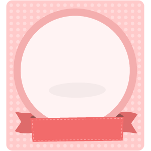
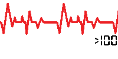
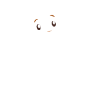
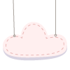

10
МАЛЫШ ТРЕБУЕТ СТАНДАРТНОГО УХОДА
Appearance. Цвет кожи
Розовый цвет и тела, и конечностей
Pulse. Частота сердцебиения
Больше 100 в минуту
Grimace. Рефлексы
Движения, кашель, чихание, громкий крик
Activity. Мышечный тонус
Активные, четко выраженые движения
Respiration. Дыхание
Нормальное, громкий крик